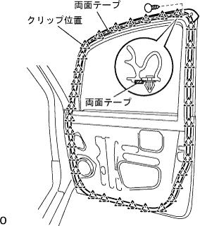

フロントドアRH 組み付け |
| 1. ボデーグリース塗布 |
ボデーグリースは、フロントドアウインドゥレギュレータRH、フロントドアアウトサイドハンドルフレームRHおよびフロントドアモータツキロックASSY RHの摺動部に塗布する。
| 2. フロントドア ウエザストリップ RH取り付け |
|  |
クリップをかん合させ、フロントドアウェザストリップRHを取り付ける。
| 3. フロントドアガラス ウエザストリップASSY OUT RH取り付け |
上から押し込み、ツメのかん合を合わせ、フロントドアガラスウエザストリツプASSY OUT RHを取り付ける。
| 4. アウタリヤビューミラーASSY RH取り付け |
アウタリヤビューミラーをボデーにセットし、スクリュー３本で仮締めする。
スクリュー3本を本締めする。
| 5. フロントドア ウインドウ フレーム モールディング FR RH取り付け |
車両取り付け面清掃(溶剤を使用する場合)
ボデーに残ったアクリルフォームテープの際いっぱいに、保護テープを貼る。
リムーバルボンド7をポリベラまたはハケを使用して、ボデーに残ったアクリルフォームテープにできるだけ厚く塗布する。
赤外線ランプでボデーに残ったアクリルフォームテープを暖める。
ボデーに残ったアクリルフォームテープをポリベラを使用して削り取る。
ボデーに残ったアクリルフォームテープに、再度リムーバルボンド7を塗布する。
赤外線ランプなどでボデーに残ったアクリルフォームテープを暖める。
ボデーに残ったアクリルフォームテープをウエスなどでこすり取る。
車両取り付け面清掃(テープリムーバルディスクを使用する場合)
ボデーに残ったアクリルフォームテープの際いっぱいに保護テープを貼る。
ディスク8枚をホルダーにセットし、リムーバルディスクをエアドリルまたは電気ドリルに取り付ける。
保護メガネをつけて、アクリルフォームテープを削り取る。
白ガソリンで接着面の清掃を行う。
フロントドア ウインドウフレーム モールディング ＦＲ ＲＨ取り付け
 |
アクリルフォームテープの離型紙をはがし、下部のツメ２箇所および、クリップ2箇所のかん合を合わせ、新品のフロントドア ウインドウ フレーム モールディング FR RHを取り付ける。
| 6. フロントドア ウインドウ フレーム モールディング RR RH取り付け |
車両取り付け面清掃
フロントドア ウインドウフレーム モールディング ＲＲ ＲＨ取り付け
 |
アクリルフォームテープの離型紙をはがし、クリップ4箇所のかん合を合わせ、新品のフロントドア ウインドウ フレーム モールディング FR RHを取り付ける。
| 7. フロントドアアウトサイドハンドル フレームSUB-ASSY RH取り付け |
トルクスソケットレンチ(T30)を使用してスクリューでフロントドアアウトサイドハンドルフレームRHを取り付ける。
| 8. フロントドア アウトサイド ハンドルASSY RH取り付け |
フロントドアアウトサイドハンドルパッドFRおよびフロントドアアウトサイドハンドルパッドRRをドアパネルに取り付ける。
フロントドアアウトサイドハンドルASSY RHをドアパネルに取り付ける。
コネクタを接続する。(スマートドアロックあり)
| 9. フロントドアアウトサイドハンドル カバー RH取り付け |
トルクスソケットレンチ(T30)を使用して、ドアロックキーシリンダが取り付いた状態でフロントドアアウトサイドハンドルカバーを取り付ける。
| 10. フロントドア ロックASSY RH(モータ ツキ)取り付け |
ドアロックに、アウトサイドハンドルフレームのリンクを挿入して、フロントドアパネルにセットする。
アウトサイドハンドルフレームのリンクが確実に、ドアロックにかん合していることを確認する。
トルクスソケットレンチ(T30)を使用して、スクリュー３本でフロントドアモータツキロックASSY RHを取り付ける。
| 11. フロントドア フレームSUB-ASSY RR LWR RH取り付け |
スクリューでフロントドアフレームRR LWR RHを取り付ける。
| 12. フロントドア フレームSUB-ASSY FR LWR RH取り付け |
スクリューでフロントドアフレームFR LWR RHを取り付ける。
| 13. フロントドアガラス ラン RH取り付け |
| 14. パワーウインドウレギュレータ モータASSY RH取り付け |
トルクスドライバー(T20)を使用して、パワーウインドゥレギュレータモータＡＳＳＹ ＲＨをスクリュー３本でフロントドアウインドゥレギュレータに組み付ける。
| 15. フロントドアウインドウ レギュレータSUB-ASSY RH取り付け |
仮付けボルトをウインドゥレギュレータに取り付ける。
ウインドゥレギュレータをドアパネルに仮組みする。
 |
ボルト６本を締め付け、フロントドアウインドゥレギュレータRHを取り付ける。
ウインドウレギユレータのコネクタを接続する。
| 16. フロントドアスティフナ クッション NO.1取り付け |
クリップ2個でフロントドア スチフナ コーション No.1を取り付ける。
| 17. フロントドア ガラスSUB-ASSY RH取り付け |
 |
レギュレータマスタスイッチを接続し、ウインドゥレギュレータを図の位置(取り付けボルト穴が見える位置)に動かす。
ボルト2本で、フロントドアガラスRHを取り付ける。
| 18. フロントドアサービスホール カバー RH取り付け |
ドアパネル側にブチルテープを貼り付ける。
新品のフロントドアサービスホールカバーRHを貼り付ける。
| 19. ドアエレクトリカルキー オシレータ取り付け |
スクリュー2本でドアエレクトリカルオキシユレータキーを取り付ける。
| 20. フロントドアトリム ブラケット NO.1取り付け |
スクリュー2本でフロントドアトリムブラケツトNo.1を取り付ける。
| 21. フロントドアインサイド ハンドルSUB-ASSY RH取り付け |
車両前方の2箇所のツメをかん合させる。
ツメをかん合させてフロントドアインサイドハンドルを取り付ける。
ケーブルを接続する。
| 22. フロントドアガラス ウエザストリップ INN RH取り付け |
フロントドア ガラス ウェザストリップ INN RHをフロントドア トリムボード RHに取り付ける。
| 23. フロントドアトリム ボードSUB-ASSY RH取り付け |
 |
クリップをかん合させ、フロントドアトリムボードRHをドアパネルに組み付ける。
スクリューで、フロントドアトリムボードRHをフロントドアインサイドハンドルRHと共に取り付ける。
| 24. ドア プルハンドル取り付け |
スクリューでドアプルハンドルを取り付ける。
| 25. フロントドアロワーフレームブラケット ガーニッシュ RH取り付け |
 |
ツメおよびクリップをかん合させ、フロントドアロワーフレームブラケツトガーニツシユRHを取り付ける。
| 26. パワーウインドウレギユレータモータのリセット |
各席のウインドウスイッチをDOWN操作(MANUAL DOWNまたはAUTO DOWN保持)して1/4以上ガラスを下げる。
各席のウインドウスイッチをUP操作(AUTO UP保持)してガラスが全閉停止後、さらに1秒以上スイッチを保持する。
| 27. マルチプレックス ネットワーク マスタ スイッチASSY取り付け |
スクリューでマルチプレツクスネツトワークマスタスイツチASSYをフロントドアアームレストベースパネルUPR RHに取り付ける。
コネクタを接続する。
 |
ツメをかん合させマルチプレツクスネツトワークマスタスイツチASSYをフロントドアトリムボードRHに取り付ける。
| 28. パワーウインドウ作動点検 |
参照